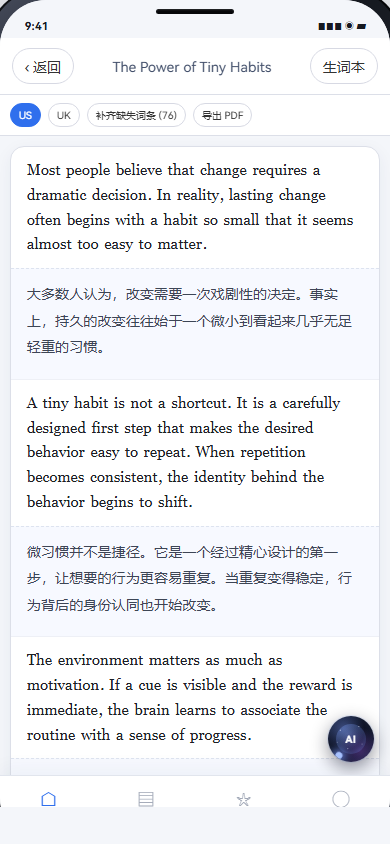
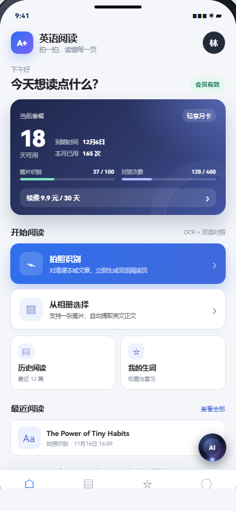
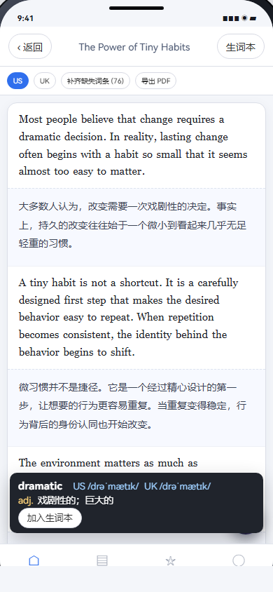
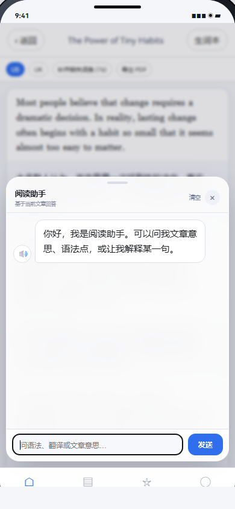
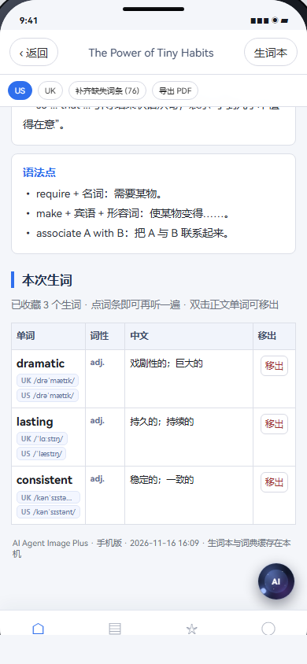
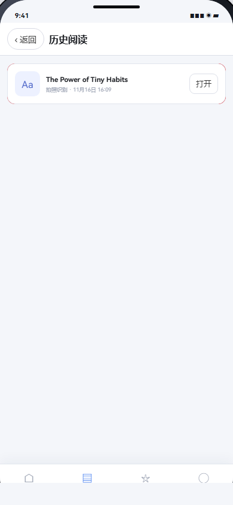
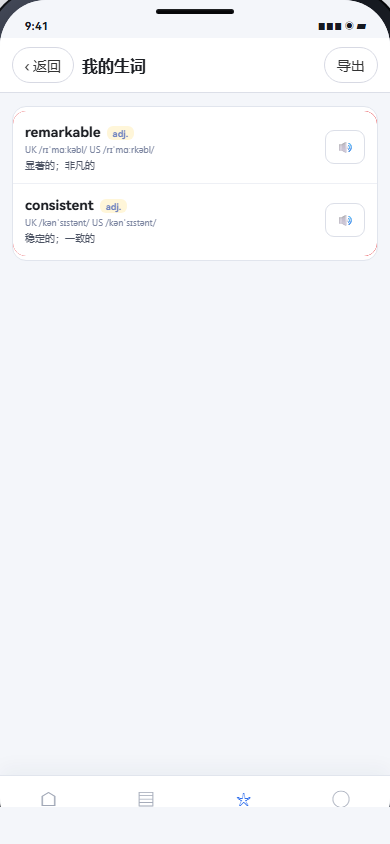

Most people believe that change requires a dramatic decision.
In reality, lasting change often begins with a habit...
AI AGENT IMAGE PLUS · A READING STORY
真正的英语阅读困难，往往不是查不到一个词，而是每查一次，就离开文章一次。这个项目把识别、翻译、查词、长难句和阅读助手，收进同一页。

01 / WHY THIS EXISTS
“不是信息不够，
而是每条信息都把你带离正文。”
一张教材照片，通常要经过翻译软件、词典、笔记 App、语法搜索，最后再回到原文。每切换一次，读者都要重新找到刚才那一行。这个项目想解决的不是“有没有 AI”，而是让所有辅助都发生在同一段阅读里。
左右并排的双语页看似高效，实际会让人不断横向跳读；中文如果太小，又很难真正对照。
离开文章去查一个词，再回来时忘了上一句。释义、音标和发音本来应该贴着正文出现。
生词、阅读记录和长难句解析彼此分开，读完之后没有一条自然的复习路径。
CAPTURE → UNDERSTAND
用户不需要理解 OCR、模型或分句。入口只有一个：对准正在读的那一页。
从课本、论文、试卷到随手拍下的英文段落，选取一张图片后，系统完成正文提取、分段与翻译，直接生成可阅读的双语页面。
保持用户原来的阅读动作，不要求先整理文件。
把图片里的文字变成可点、可选、可排版的文本。
按段落成对生成中文，避免整页一次性翻译失去上下文。
结果进入历史记录，下一次可以从上次的文章继续。
首页不堆功能，只保留“拍照 / 相册 / 历史 / 生词”四个高频入口。减少第一步的选择，才有后面的连续阅读。

READING LAYOUT
不把双语硬塞在一屏，而是按“先英文、再中文”的顺序，让两种语言都保留可读性。
中文使用更大字号、更舒展的行高。读者不必横向来回找对应段落，也不会被过小的中文挤到看不清。
“返回 / 生词表”和“US / UK / 补齐词条 / 导出 PDF”在滚动时保持原位，不把操作带到屏幕外。
首页、历史、生词本、我的保持全局可见。进入文章后仍能一键回到自己的词和记录，而不是迷路。
音标、词性、释义和发音贴着当前词出现；点击空白处立即消失，正文重新变得干净。
ONE WORD, IN CONTEXT
释义不是把用户带到词典，而是贴着当前句子出现；看完就消失，阅读位置没有变化。

一个词卡里只放此刻真正需要的信息：英式与美式音标、词性、中文释义、发音按钮，以及加入生词本的动作。
Most people believe that change requires a decision.
adj. 戏剧性的；巨大的
UK / US 放在单词下方并做视觉弱化，不与中文释义争空间。
双击正文单词加入或移出生词本；不确定时也可以用词卡里的按钮。
不用专门找关闭按钮，点正文空白处就恢复干净页面。
A SENTENCE, EXPLAINED
不预设所有句子都值得分析。用户在正文里手动选中真正没读懂的那一句，再让它进入 AI 小球。
分析结果落在当前阅读页下方，不回退、不跳页。
选中句子后，
信息会飞向这里。
手指长按并滑动选中，页面出现“长难句分析”。不是把整页都塞满解析。
句子化成粒子飞入小球，极光环绕，文案只显示“长难句分析中”，不暴露底层模型名。
分析完成后，解释进入当前页下方。用户知道自己读到了哪里，也知道解释属于哪一句。
THE ASSISTANT IN THE MARGIN
它只是页边的一颗小球。需要时点一下，不需要时淡出；拖到不挡文字的位置，继续读。

助手回答的是“这篇文章里的问题”：这句话为什么用现在完成时？language 和 tongue 在这里有什么差别？帮我润色这一句，但不改变原意。
不阅读时退出视线，不遮挡正文；碰一下又回到不透明。
避开长段落、图片或难句，让用户自己决定它应该待在哪里。
不产生新的对话页面，也没有返回成本。点浮层外就能关闭。
松开 3 秒后会变淡。这个演示不发起任何网络请求。
The real difficulty is not the word itself, but the way it changes meaning inside a longer sentence.
这句话的主干是 difficulty is not the word itself。but 后面补充说明真正的难点在哪里。
基于当前段落回答KEEP WHAT MATTERS
生词和历史不是阅读的副产品，而是下一次阅读的起点。它们必须足够轻，才不会变成新的负担。

只保存这次阅读新加入的词。历史生词留在生词本，不再重复铺在每篇文章下面。
UK / US 音标放到单词下方并弱化层级，把宽度让给中文释义。词性统一使用 n. / v. / adj. 这类缩写，避免和释义框重叠。
历史记录和生词本都采用单条左滑清除，不再用右上角“一键清空”。误删风险更低，也更符合手机的列表操作习惯。
历史、生词本、阅读页的顶部操作保持固定；首页、历史、生词本、我的四个底部入口始终可达。


复习不该从整理开始。打开生词本，应该立刻看到能读、能听、能移除的词。
— 列表交互的三条底线FROM PERSONAL TOOL TO PRODUCT
个人版先把体验跑通；小程序版本再把模型调用、会员与数据放回服务端，用户只负责阅读。
拍照、阅读、查词、对话、生词与历史
不保存任何模型密钥登录 · 会员 · 额度 · 订单 · 内容安全
所有扣费与权限判断都在这里小程序客户端只负责显示。用户不需要配置 API，也不应该看到供应商密钥。
付款后获得固定有效期；到期后停止 AI 功能，历史阅读和生词仍然保留，续费后继续使用。
原型按 9.9 元 / 30 天、100 次图片识别与 400 轮对话估算毛利，真实价格要用用量日志校准。
原图放私有桶，OCR 完成后删除；长期保存阅读结果、词条和用户自己的记录。
BEHIND THE CALM INTERFACE
检索本地文档、教材和笔记，回答时带着来源，不把所有内容一次性塞进上下文。
把识图阅读、数学题、资料研究和工程构建写成按需加载的固定流程。
识图、计算、生成阅读页和写入生词，不靠模型“想象已经完成”。
短、中、长三层记忆分别裁剪与压缩，避免对话越多、上下文越无限膨胀。
RAG 负责“查资料”，Skills 负责“按流程做”，Tools 负责“真的执行”，Memory 负责“记住用户”。四者分开之后，能力可以增长，页面却不必变复杂。